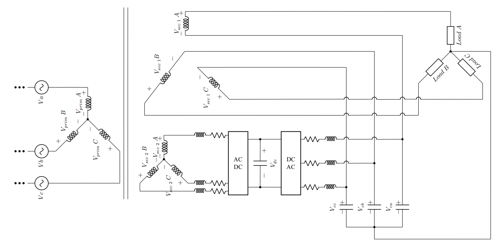
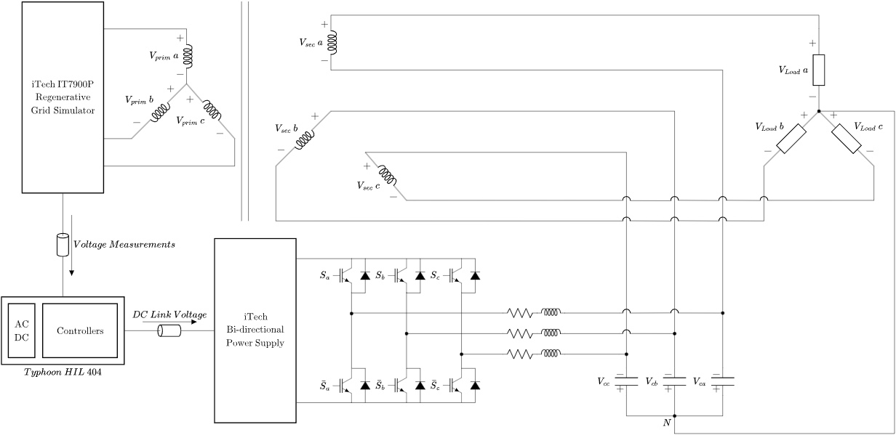
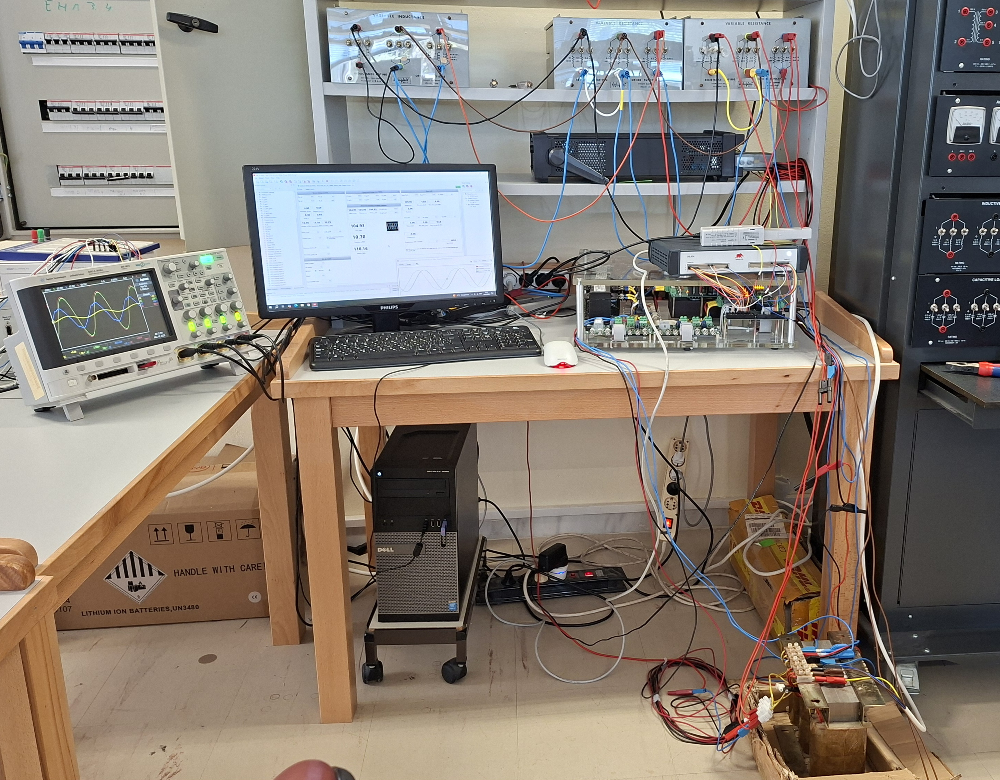
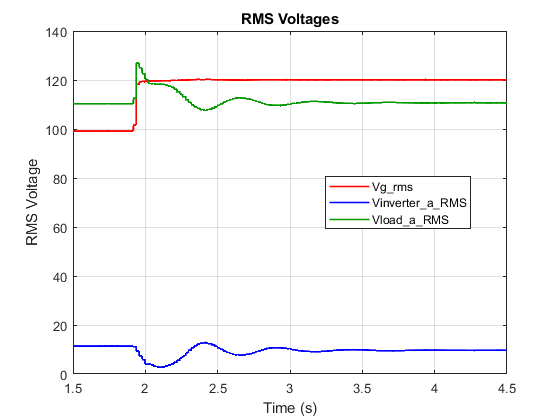
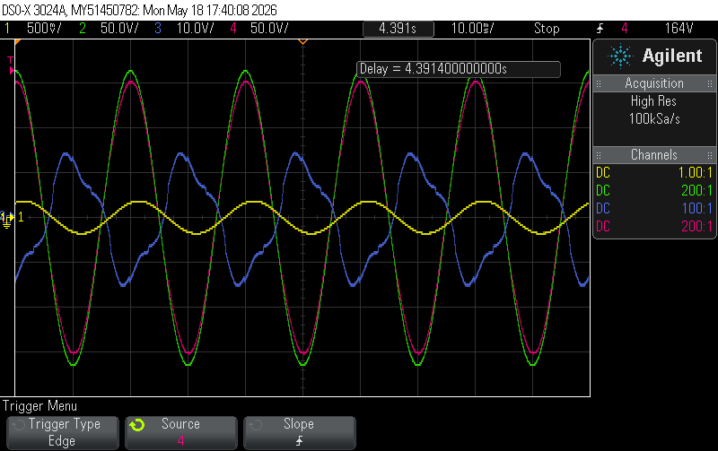
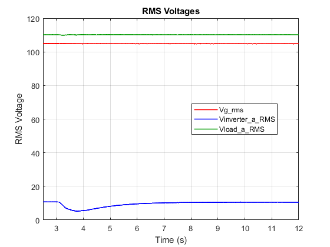
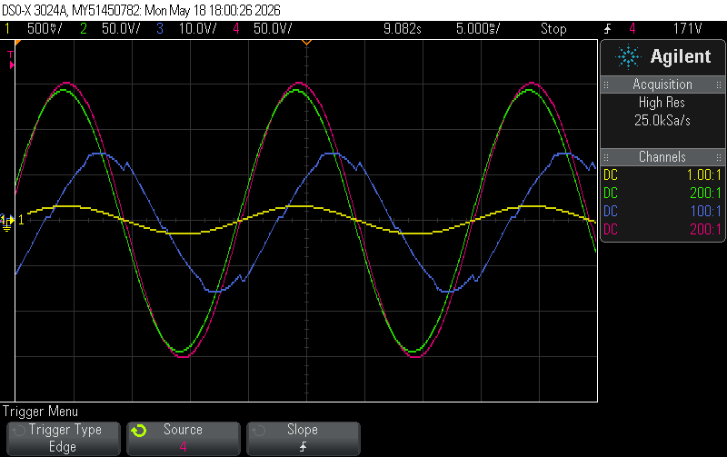

The thesis focuses on the control and experimental implementation of a Hybrid Transformer, namely the combination of a conventional distribution transformer with power-electronic converters rated at a fraction of the transformer’s nominal power, with the aim of regulating the voltage in distribution networks. Given the current state of technology, the complete replacement of existing transformers with Solid-State Transformers is not considered the optimal solution due to their high cost and reduced reliability under fault conditions.
The integration of an AC/AC converter into the transformer’s existing auxiliary winding is investigated, along with the development of the necessary current and voltage control loops in the rotating DQ reference frame. Since controlling the power-electronic converters employed in the system is a particularly complex task, a hierarchical control strategy based on PI controllers is studied, together with an additional control loop for regulating the phase shift of the load voltage relative to the supply voltage. These technologies aim to stabilize the magnitude and phase angle of the load voltage at their desired reference values.
The aforementioned concepts are investigated through the development of a real-time simulation model in the Typhoon HIL 404 environment, as well as through an experimental setup interfaced with the Typhoon HIL 404. This enables the observation of the system’s behavior and characteristics under variations in load, grid voltage and phase shift.






